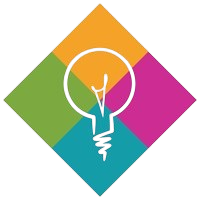

My Life
My name is Uri Darom. I was born in Tel-Aviv, Israel, and moved
to the United States when I was 8 years old.
Currently, I am a senior at the Cambridge Rindge and Latin high school.
I hope to major in computer science in college.
In my free time, I enjoy reading, photography, and astronomy. I do astrophotography at night,
to which I have dedicated the majority of this site. Check out some of my images in the "Images" tab above.
Work Experience
Innovators For Purpose
Position: Intern
Dates: June-August 2022
Description: I worked with peers to create technological solutions to social justice problems.
Green Cambridge
Position: Intern
Dates: June-August 2023
Description: I worked for a nonprofit organization to help restore green spaces in Cambridge MA.
Science Research Mentor Program
Position: Intern
Dates: September 2023 - May 2024
Description: I worked under a postdoc student at the Harvard/Smithsonian Center for Astrophysics to
simulate galaxies in the early universe, and investigate their evolution over time.
Lemelson/MIT
Position: Intern
Dates: June-August 2024
Description: I worked on a product that measures a user's sweat salinity levels and informs them about
their electrolyte levels during a workout.
Extracurriculars
Debate Club
Position: Co-President
Dates: 2022-2025
Astronomy Club
Position: President
Dates: 2023-2025
Association of Widefield Astrophotographers
Position: Founder
Dates: September 2023 - May 2024
CRLS Swim Team
Position: Varsity Swimmer
Dates: 2021-2023
MIT/CRLS InvenTeam
Position: Engineer
Dates: 2024-2025